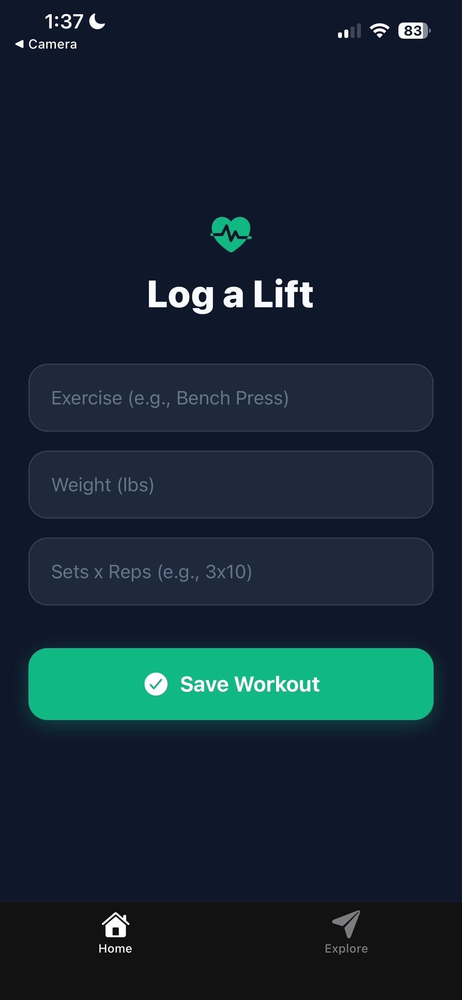

Carnegie Mellon University '29
Get in TouchI am an Electrical and Computer Engineering student at Carnegie Mellon University (Class of 2029) with a passion for mathematics, programming, and hardware design.
My background includes research in aerospace simulations at the University of Florida and leadership roles in academic honor societies. I am currently building my skills in Python, Java, and circuit analysis to solve complex engineering problems.
Pittsburgh, PA | B.S. in Electrical and Computer Engineering
GPA: 3.73/4.00
Selected Coursework: Concepts of Mathematics, Intro to ECE, Fundamentals of Programming, Principles of Imperative Computation, Calc in 3D, Coding with AI.
Tampa, FL | National Merit Finalist
Student Science Training Program | University of Florida
Mu Alpha Theta Honor Society
Global Leadership Adventures - Sea Turtle Initiative
Python | Object-Oriented Programming (OOP) | CMU Graphics
Python WebSockets | HTML5 Canvas | Vanilla JavaScript | Game Physics
HTML | CSS | JavaScript | Git
Python | Rapid Prototyping
Python | NASA API | Real-Time Data | Pygame
Python | Flask | Latest Gemini Model | Render
Ask me about Nicholas's research at UF or his ECE skills!
Computer Vision | Hand Tracking | UI Navigation
Python | Flask | SQLite | SQL | HTML/CSS
Python | Prompt Engineering | Secure Data
React Native | Expo | AsyncStorage | Mobile UI
